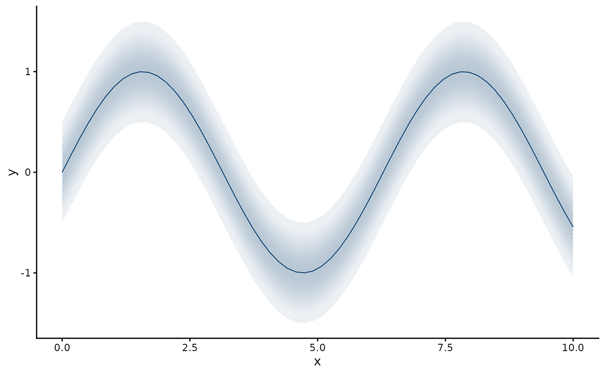

Wraps a ggplot2 layer so that its fill is drawn as a halftone. The wrapped geom draws as usual. At draw time,
every filled polygon, rectangle or path in its grob tree is rasterised onto a millimetre lattice, given a tone
field derived from its geometry, and drawn as dots or hatch in its fill colour, clipped to the shape. Works with
ribbons, areas, bars and columns, densities and violins, polygons, tiles and geom_sf().
Usage
with_halftone(
layer,
pitch = 0.35,
angle = NULL,
grid = "hex",
tone = NULL,
profile = c("vertical", "radial"),
levels = NULL,
bayer_n = 4,
dot_max = 0.9,
gamma = 1,
tone_max = NULL,
outline = TRUE,
shape = "circle",
algorithm = "bayer",
clip = TRUE,
overlap = c("overprint", "stack"),
level = 0.95,
min_feature = 0.09,
redundant = NULL
)
# S3 method for class 'halftone_fill'
makeContent(x)Arguments
- layer
A ggplot2 layer, for example
geom_ribbon(aes(ymin = lo, ymax = hi, fill = g)); a list holding one, which is whatgeom_sf()returns; or a whole plot or patchwork, in which case every layer in it is wrapped and the object handed in is left alone. Screening a whole plot gives a usable figure in one call, but it screens the fill and nothing else: addwith_halo()to the lines that cross a screen andtheme_halftone()for the paper ground and the ink palette.- pitch
Lattice spacing in mm (0.35, 73 lines per inch). Coarsen deliberately for a poster, or where several hatched groups overlap.
- angle
Lattice angle in degrees.
NULLpicks 45 on a square lattice and for hatching, 15 for hex dots.- grid
"hex"(default) or"square". A 45-degree square lattice is the classic map and photo screen.- tone
Tone profile:
NULL(from the geometry, see below),"likelihood","flat","vignette","centre"(the older gaussian, within a hair of likelihood),"edge","tent"or"centre-soft".- profile
Distance used by the non-flat profiles.
"vertical"measures to the top and bottom edge along each column and is normalised per column, so every column reaches full tone at its own middle; this is right for ribbons and densities."radial"measures to the nearest point of the outline and is normalised over the whole shape, so a narrow arm stays lighter than the body.- levels
NULLfor continuous tone (dot area follows tone exactly). An integer quantises tone to that many steps and dithers the remainder withalgorithm;levels = 1is a binary stipple.- bayer_n
Size of the Bayer matrix when
algorithm = "bayer".- dot_max
Diameter of a full-tone dot as a fraction of
pitch(0.9). Above 1 dots merge; it is the ink weight of the screen at 100% tone. For line screens it is the full-tone strip width, as a fraction of pitch.- gamma
Tone curve: tone is raised to this power before printing. Below 1 lifts mid-tones, above 1 deepens them.
- tone_max
Tone ceiling;
NULLpicks the register above.- outline
Keep the layer's own outline (with its fill removed) on top of the screen.
- shape
"circle","square","diamond"(area-matched, so a mixed-shape screen stays in one register) or"line"for a line screen whose strip width follows tone.- algorithm
Dither used when
levelsis set:"bayer"(graded tone),"blue_noise"(stipple) or"floyd_steinberg"(photographs).- clip
Clip the screen to the exact fill region (grid clipping path; ragg, cairo and pdf honour it).
- overlap
"overprint"weaves all inks present in a cell (default);"stack"lets the last-drawn shape win, for nested intervals and ridgelines.- level
Confidence level the ribbon represents, for the
"likelihood"profile.- min_feature
Smallest printable feature in mm (0.09, i.e. 0.25 pt, the minimum line weight in journal artwork guidelines; see References). A cell whose dot would be smaller prints at the floor with probability tone/floor, so coverage is preserved and light tone becomes sparse minimum dots or broken hairlines. Hatch strips are never thinner. Set to 0 to disable.
- redundant
Also give each fill group its own screen (angle and shape), so colour is never the only encoding.
NULLmeans yes for geoms whose groups tile the plane (bars, areas, polygons, tiles, sf) and no for intervals and densities, whose overlapping groups are woven on one lattice; separate lattices there moire.- x
A
halftone_fillgrob (internal;makeContentmethod).
Tone profile
With tone = NULL, the profile depends on the geometry:
bars, columns, tiles, areas, polygons and sf:
"flat", because for those the interior carries the value;ribbons (intervals):
"likelihood", the normal density of the estimate across the interval: 1 on the estimate, 0.146 at a 95% limit (level);densities and violins:
"vignette", a soft fade towards the outline, so that overlapping groups stay legible;line screens: always
"flat", because a tapered hatch looks like fringe;a mapped
screen: always"flat", because it is a categorical pattern.
Register
tone_max = NULL sets one tone ceiling across figure types: flat 0.45 (polygons and sf 0.6), centre 0.6, vignette
0.7, hatching 0.4, hatched intervals a hairline (the strip width that equals min_feature). Alpha on the fill is
folded into tone: a fill with 30% alpha prints as a 30% screen, and the output holds no partial transparency.
Examples
x <- seq(0, 10, length.out = 60)
d <- data.frame(x, y = sin(x), lo = sin(x) - 0.5, hi = sin(x) + 0.5)
ggplot2::ggplot(d, ggplot2::aes(x)) +
with_halftone(ggplot2::geom_ribbon(ggplot2::aes(ymin = lo, ymax = hi),
fill = halftone_inks[["blue"]])) +
with_halo(ggplot2::geom_line(ggplot2::aes(y = y), colour = halftone_inks[["blue"]])) +
ggplot2::theme_classic() + theme_halftone()
